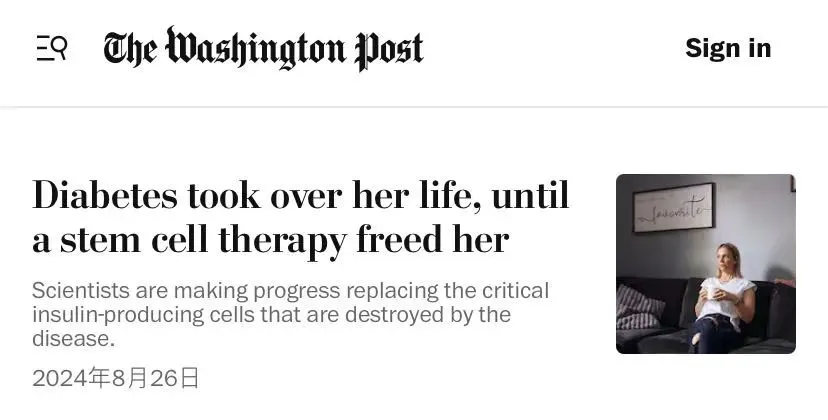
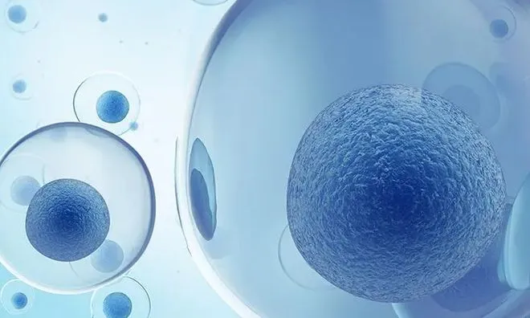

年后肝"负重"？百年春护肝美颜能量抗衰老针——给肝"松绑"，让脸发光！
2026-03-01

About Us
关于百年春
8月26日，《华盛顿邮报》刊发了一篇引人注目的报道，讲述了35岁的护士Amanda Smith的康复故事。长期与1型糖尿病抗争的她，在接受干细胞治疗后，短短一年内就成功告别了她赖以生存的胰岛素。这一医疗奇迹不仅改写了Smith的人生轨迹，更为全球数百万糖尿病患者点亮了新的希望之光。

对于Amanda Smith来说，糖尿病一直是她生活中的阴影。自被诊断为1型糖尿病以来，她的生活充满了不安与焦虑。每天，Smith不仅要依赖胰岛素维持生命，还要随时监控血糖水平，稍有不慎，便可能面临生命危险。她的家庭也因糖尿病遭受了巨大痛苦，甚至有亲人因病截肢，这更让她对未来充满了恐惧。
然而，在2023年2月，Smith迎来了她生命中的转折点。她接受了一项干细胞疗法，这一疗法利用实验室培养的胰岛细胞替代患者体内受损的胰岛细胞。医生将这些替代细胞移植到Smith的肝脏供血血管中。几个月后，奇迹发生了：Smith不再需要依赖外部胰岛素，她的新细胞开始自行产生胰岛素。
对于Amanda Smith而言，这项干细胞疗法不仅为她的身体带来了康复，更重塑了她的生活。过去的一年里，她不再被血糖异常的警报声惊醒，生活也不再围绕疾病转动。她表示：“我的生活已经被彻底改变了。”
Amanda Smith的康复故事给无数糖尿病患者带来了希望。她感慨道：“我祈祷这能惠及每个人。”她的愿望也是科学家们的目标——让更多1型糖尿病患者能像她一样，告别胰岛素，重获自由与健康。
这一革命性的疗法不仅改变了个体患者的命运，也标志着医学领域向糖尿病治愈迈出了重要一步。
从“埃德蒙顿方案”到干细胞疗法
糖尿病的治疗史充满了曲折与探索。早在1966年，医学界便尝试通过全胰腺移植来治疗糖尿病，但由于技术和免疫排斥问题，这种方法并不普及。
20世纪80年代，James Shapiro医生带领团队在胰岛细胞移植方面取得了重要进展，并于2000年开发出“埃德蒙顿方案”，首次让七名患者通过胰岛移植停止使用胰岛素。然而，这种治疗方法仍然存在诸多挑战，如胰岛细胞的供应不足、免疫抑制药物的副作用等。
面对这些难题，科学家们将目光投向了干细胞研究。干细胞具有分化为胰岛β细胞的能力，能够补充因疾病而减少的胰岛素产生细胞，从而恢复胰岛素的分泌和血糖水平的稳定。此外，干细胞还能通过旁分泌作用改善受损的胰岛微环境，促进血管生成和免疫调节，从而对糖尿病及其并发症产生积极影响。

近年来，干细胞治疗糖尿病的潜力逐渐被证实。临床研究表明，干细胞治疗在大多数案例中可以作为一种长期的解决方案，显著减少患者对胰岛素的依赖，并将空腹血糖水平降至正常范围内。随着研究的深入，干细胞治疗有望为糖尿病患者提供更为有效和根本的治疗方案，为彻底治愈糖尿病带来新的希望。